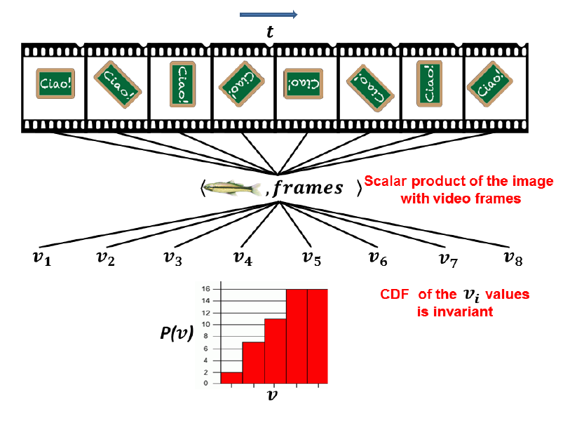
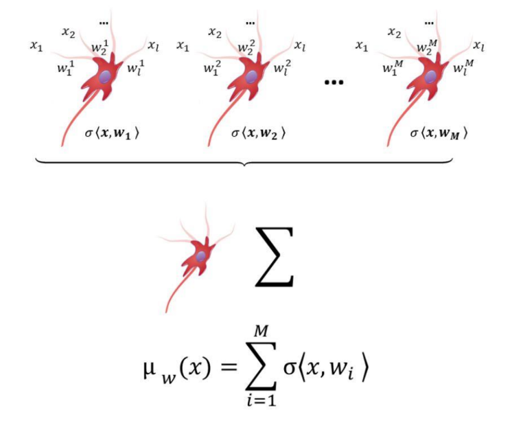
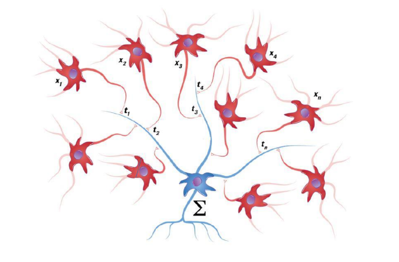
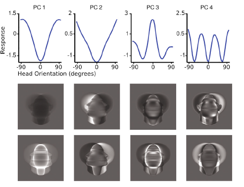

It’s surprising how the brain is able to recognize objects regardless of their position, scale, rotation, and illumination. The intuitive fact that the brain is able to recognize some persistent or invariant characteristics that identify an object is the concept at the basis of the following notes. The idea is that our visual cortex and up to some degree the ANN used in computer vision are able to recognize objects by learning a set of invariant representations of the input.
Theory of Invariant Representations
First of all, we lay out the mathematical foundation of the theory of invariant representations.
Let’s model a data space as a Hilbert space $\mathcal{I}$ and denote by $\langle\cdot, \cdot\rangle$ and $\|\cdot\|$ is inner product and norm respectively. We consider a set of transformations over $\mathcal{I}$ endowed with a group structure and we denoted it as
$$ \begin{equation} \mathcal{G} \subset\{g \mid g: \mathcal{I} \rightarrow \mathcal{I}\} \end{equation} $$
we also define the group action $(g,x) \rightarrow g \cdot x \in \mathcal{I}$ with abuse of notation as $gx$.
We define the following equivalence relation over $\mathcal{I}$:
$$ \begin{align} I \sim I^{\prime} \Leftrightarrow \exists g \in \mathcal{G} \text { such that } g I=I^{\prime} \end{align} $$
i.e. two elements of $\mathcal{I}$ are equivalent if they belong to the same orbit.
Invariant Representation: A representation $\mu: \mathcal{I} \rightarrow \mathcal{F}$ is invariant under the action of $\mathcal{G}$ if:
$$ \begin{align} I \sim I^{\prime} \Rightarrow \mu(I)=\mu\left(I^{\prime}\right), \end{align} $$
for all $I, I^{\prime} \in \mathcal{I}$.
To exclude trivially invariant representations and injectivity we also require the other direction of the implication to hold:
Selective Representation: A representation $\mu: \mathcal{I} \rightarrow \mathcal{F}$ is selective under the action of $\mathcal{G}$ if:
$$ \begin{align} \mu(I)=\mu\left(I^{\prime}\right) \Rightarrow I \sim I^{\prime} \end{align} $$
for all $I, I^{\prime} \in \mathcal{I}$.
Compact Group of Invariant Representations
We now restrict our analysis to the cases in which $\mathcal{G}$ is a compact group. Before diving in we need to introduce the concept of Haar measure over $\mathcal{G}$.
Definition .1 Let G be a locally compact group. Then a left-invariant Haar measure on G is a Borel measure $\mu$ such that for all measurable functions $f: G \rightarrow \mathbb{R}$ and all $g’ \in G$ it holds:
$$ \begin{align} \int d g f(g)=\int d g f\left(g^{\prime} g\right) \end{align} $$
For example, the Lebesgue measure is an invariant Haar measure on real numbers.
We can now prove the following result:
Theorem 1. Let $\psi: \mathcal{I} \rightarrow \mathbb{R}$ be a possibly nonlinear, functional on I. Then, the function defined by
$$ \begin{align} \mu: \mathcal{I} \rightarrow \mathbb{R}, \quad \mu(I)=\int \operatorname{dg} \psi(g I), \quad I \in \mathcal{I} \end{align} $$
is invariant in the sense of Definition 1.
Proof. We need to prove that $\mu_{f} = \mu_{f}(e)$ with $e$ the identity element of $\mathcal{G}$. We have:
$$ \begin{aligned} \mu_f(\bar{g})= & \int d g f(g \bar{g}) \\ \stackrel{1}= & \int d\left(\hat{g} \bar{g}^{-1}\right) f(\hat{g}) \quad \hat{g}=g \bar{g}, \quad g=\hat{g} \bar{g}^{-1} \\ \stackrel{2}= & \int d \hat{g} f(\hat{g}), \quad d\left(\hat{g} \bar{g}^{-1}\right) =d \hat{g} \\ \stackrel{3}= & \int d \hat{g} f(\hat{g})=\mu_f(e) \end{aligned} $$
where we used: 1. reparametrization of group elements, 2. invariance of Haar measure, 3. group closure under composition.
We now want to apply this result to CNN. Let
$$ \begin{align} \psi: \mathcal{I} \rightarrow \mathbb{R}, \quad \psi(I)=\eta(\langle g I, t\rangle), \quad I \in \mathcal{I}, g \in \mathcal{G} \end{align} $$
where  Crucially, mechanisms capable of computing invariant representations under affine transformations can be learned (and maintained) in an unsupervised, automatic way just by storing sets of transformed templates which are unrelated to the object to be represented in an invariant way. In particular the templates could be random patterns. Source: Anselmi et al. Representation Learning in Sensory Cortex: a theory$\psi$ represents a single neuron that is performing the inner product between the input $I$ and its synaptic weights $t$ followed by a pointwise nonlinearity $\eta$ and a pooling layer.
Ok, now that we have a formal description of a neuron we want to make it invariant to the action of $\mathcal{G}$. We can do that using the previous results about the Haar measure that is by averaging over the group action. As a matter of fact, since the group representation is unitary we have that:
$$ \begin{align} \left\langle g I, I^{\prime}\right\rangle=\left\langle I, g^{-1} I^{\prime}\right\rangle, \quad \forall I, I^{\prime} \in \mathcal{I} \end{align} $$
and therefore plugging in the formulation used before we can rewrite $\psi$ as:
$$ \begin{align} \psi_{t}(I)=\int \operatorname{dg} \eta(\langle I, g t\rangle), \quad \forall I \in \mathcal{I} \end{align} $$
We call the function above signature
Now the mathematical of why this is invariant has already been proved, there’s a more intuitive argument that motivates this formulation. To compute an invariant representation of an element of the dataset we need to have the orbit of a $t \in \mathcal{T}$ a template that provides the neuron with a “movie” of an object undergoing a family of transformations.
In practical scenarios we won’t be dealing with continuous groups but with discrete ones, in this case, the integral becomes a set of cumulative histogram where each bins is defined as:
$$ \mu_h^k(I)=\frac{1}{|G|} \sum_{i=1}^{|G|} \eta\left(\left\langle I, g_i t^k\right\rangle+h \Delta\right) $$
where $I$ is an image, $\eta$ is the threshold function $\Delta$ > 0 is the width of bin
in the histogram and $h = 1,…,H $ is the index of the bins of the histogram.
- A unique probability distribution can be naturally associated with each orbit.
- Each such probability distribution can be characterized in terms of one-dimensional projections.
- One-dimensional probability distributions are easy to characterize, e.g. in terms of their cumulative distribution or their moments.
First, we start by defining a map $P$ to associate a probability distribution to each point:
Definition 4.
For all $I \in \mathcal{I}$ define the random variable
$$ Z_I:(\mathcal{G}, d g) \rightarrow \mathcal{I}, \quad Z_I(g)=g I, \quad \forall g \in \mathcal{G} $$
with law
$$ \rho_I(A)=\int_{Z_I^{-1}(A)} d g $$
for all measurables sets $A \subset \mathcal{I}$. Let
$$ P: \mathcal{I} \rightarrow \mathcal{P}(\mathcal{I}), \quad P(I)=\rho_I, \quad \forall I \in \mathcal{I} $$
So basically the probability distribution of a point associates a Borel set in $\mathcal{I}$ with the measure of the set of group elements that map the point to the set. Now we can prove the following result:
Theorem 2. For all $I,I' \in \mathcal{I}$ it holds:
$$ \begin{align} I \sim I^{\prime} \Leftrightarrow P(I)=P\left(I^{\prime}\right) . \end{align} $$
Okay, now we have identified points belonging to the same orbit (i.e. belonging to the same invariant representation) through the probability distribution associated with each point.
To avoid the pain of working with high-dimensional distributions we want to characterize the probability distribution in terms of one-dimensional projections. The idea of the authors of the paper is to build a representation that they call Tomographic Probabilistic representation that is obtained by first mapping each point in the distribution supported on its orbit and then in a (continuous) family of corresponding one-dimensional distributions.
Thanks to this representation we can get the following result:
Theorem 3. Let $\psi$ the TP representation the for all $I,I' \in \mathcal{I}$ it holds:
$$ \begin{align} I \sim I^{\prime} \Leftrightarrow \Psi(I)=\Psi\left(I^{\prime}\right) . \end{align} $$
The above theorem’s proof is based on a known result:
Theorem 4
For any $\rho,\gamma \in \mathcal{P}(\mathbb{I})$ it holds:
$$ \begin{align} \rho=\gamma \quad \Leftrightarrow \quad \rho^t=\gamma^t, \quad \forall t \in \mathcal{S} . \end{align} $$
The gist of this section is that the problem of finding invariant/selective representations
reduces to the study of one-dimensional distributions, as we discuss
next.
We can now close our probabilistic argument by bridging the results above with the representation defined in CNN section. The idea is the describe a one-dimensional probability in terms of its (CDF). The authors of the paper define a new CDF representation $\mu$ mapping each point to the CDF of a family of one-dimensional distributions. It can be proved that:
Theorem 5.
For all $I \in \mathcal{I}$ and $t \in \mathcal{T}$
$$ \begin{align} \mu^t(I)(b)=\int d g \eta_b(\langle I, g t\rangle), \quad b \in \mathbb{R} \end{align} $$
where we let $\mu^t(I)=\mu(I)(t)$ and, for all $b \in \mathbb{R}$, $\eta_b : \mathbb{R} \rightarrow \mathbb{R}$ is given by $\eta_b(a)=H(b-a), \quad a \in \mathbb{R}$. Moreover, for all $I,I' \in \mathcal{I}$:
$$ \begin{align} I \sim I^{\prime} \Leftrightarrow \mu(I)=\mu\left(I^{\prime}\right) \end{align} $$
Selectivity with a limited template set
All the previous discussions were made in the theoretical setting in which we had an infinite set of templates available, in practice, this is not possible and although invariance is preserved we can’t get full selectivity. Why? Well the core idea to ensure selectivity in the previous approach consisted in creating a map $\mu$ that was sending images in a family of CDF, indexed, by the template and on the real line:
$$ \mu: \mathcal{I} \rightarrow \mathcal{F}(\mathbb{R})^{\mathcal{T}} $$
Using additional details of theorem 5 we’re able to prove the relation (14):
but this last statement is saying “two images belong to the same orbit if and only if ALL of their CDF indexed by $t$ are equal” Having “less” templeates clearly reduces the resolution induced by quotienting the space according to this relation.
The good news is that in the theorem that we are about to introduce we will set a lower bound to the number of samples needed to get “enough” selectivity.
Let’s endow the representation space of metric structure: given $\rho, \rho^{\prime} \in \mathcal{P}(\mathbb{R})$ two probability distributions and let $f_\rho, f_{\rho^{\prime}}$ their cumulative distribution functions, then it’s possible to define the Kolmogorov-Smirnov metric induced by the uniform distribution. First, consider the distance:
$$ \begin{align} d_{\infty}\left(f_\rho, f_{\rho^{\prime}}\right)=\sup _{s \in \mathbb{R}}\left|f_\rho(s)-f_{\rho^{\prime}}(s)\right|, \end{align} $$
Using the representation formulated in the previous section we can define the following metric::
$$ \begin{align} \mu^t(I)(b)=\int d g \eta_b(\langle I, g t\rangle), \quad b \in \mathbb{R} \end{align} $$
with $u$ the uniform measure on the sphere $\mathcal{S}$ and the theorems 4 and 5 will ensure that the metric is well defined.
Ok now we have formulation for our metric which is obtained integrating the distance between two representations varying the template, unfortunately we don’t have in practice an infinite set of templates but generally a finite $\mathcal{T}_k=\left\{t_1, \ldots, t_k\right\} \subset \mathcal{S}$ and so we need to rewrite our metric as:
$$ \begin{align} \widehat{d}\left(I, I^{\prime}\right)=\frac{1}{k} \sum_{i=1}^k d_{\infty}\left(\mu^{t_i}(I), \mu^{t_i}\left(I^{\prime}\right)\right) \end{align} $$
Now that we have lay out all the instruments we’re ready to enunciate and prove the following theorem:
Theorem 6 Consider n images $\mathcal{I}_{n}$ in $\mathcal{I}$. Let $k \geq \frac{2}{c \epsilon^2} \log \frac{n}{\delta}$ where $c$ is a constant. Then with probability $1-\delta^{2}$ it holds:
$$ \begin{align} \left|d\left(I, I^{\prime}\right)-\widehat{d}\left(I, I^{\prime}\right)\right| \leq \epsilon \end{align} $$
for all $I, I^{\prime} \in \mathcal{I}_{n}$.
Proof:
The proof follows from a direct application of Höeffding’s inequality and Boole’s inequalities. Fix $I, I^{\prime} \in \mathcal{I}_{n}$. Define the real random variable $Z: \mathcal{S} \rightarrow[0,1]$,
$$ Z\left(t_i\right)=d_{\infty}\left(\mu^{t_i}(I), \mu^{t_i}\left(I^{\prime}\right)\right), \quad i=1, \ldots, k $$
From the definitions it follows that $\|Z\| \leq 1$ and $\mathbb{E}(Z)=d\left(I, I^{\prime}\right)$. We can now plug the above result in Höeffding’s inequality: and get that:
$$ \mathcal{P}(\left|d\left(I, I^{\prime}\right)-\widehat{d}\left(I, I^{\prime}\right)\right|\geq \epsilon)=\mathcal{P}(\left|\frac{1}{k} \sum_{i=1}^k \mathbb{E}(Z)-Z\left(t_i\right)\right|\geq \epsilon) \leq 2 e^{-\epsilon^2 k} $$
We showed that this bound holds for a fixed pair of images, we can now apply Boole’s inequality to get the result for all pairs of images:
$$ \mathcal{P}(\bigcup_{I,I^{\prime}}\left|d\left(I, I^{\prime}\right)-\widehat{d}\left(I, I^{\prime}\right)\right|\geq \epsilon) \leq \sum_{I,I^{\prime}} \mathcal{P}(\left|d\left(I, I^{\prime}\right)-\widehat{d}\left(I, I^{\prime}\right)\right|\geq \epsilon) \leq n^{2} 2 e^{-\epsilon^2 k} $$
Thus the result holds uniformly on the all $\mathcal{I}_{n}$. We conclude the proof setting $\delta^{2}$ and $k \geq \frac{2}{c \epsilon^2} \log \frac{n}{\delta}$
It’s interesting to remark that there are other classical results on distance-preserving embedding, such as Johnson Linderstrauss Lemma, the above formulation though ensures distance preservation up to a given accuracy which increases with a larger number of projections.
Theorem 7
Suppose data are generated by $\mathcal{G}$. A CNN with convolutions w.r.t $\mathcal{G}$ is implementing a data representation $\Phi$ that is invariant and selective i.e. $\mathbf{x} \sim \mathrm{x}^{\prime} \Leftrightarrow \Phi(\mathrm{x})=\boldsymbol{\Phi}\left(\mathrm{x}^{\prime}\right)$ with one layer $\Phi: \mathbb{R}^d \rightarrow \mathbb{R}^p$ and:
$$ \Phi_w(x)=\sum_i\left|\left(x *_{\mathcal{G}} w\right)_i\right|_{+}=\sum_i\left|\left(W^T x\right)_i\right|_{+}=\sum_i\left|\left\langle x, g_i w\right\rangle\right|_{+} $$
Brief summary: From a more practical point of view the steps to be performed are these:
- Sample a set of templates
$\mathcal{T}_k=\left\{t_1, \ldots, t_k\right\} \subset \mathcal{S}$ - Project on transforming templates
$\left\{\left\langle x, g_j t^k\right\rangle\right\}, j=1, \ldots,|G|$ - Pooling using non-linear functions: We defined $\mu$ through a sum of non-linear activation function $\eta$ and we proved selectivity for a Heaviside function. In practice though we can use a more general class of functions such as the sigmoid function.
- compute the signature from the template set $\mathcal{T}_k$:
$$ \Phi(x)=\left(\left\{\mu_1^1(x)\right\},\left\{\mu_2^1(x)\right\}, \ldots,\left\{\mu_N^K(x)\right\}\right) \in \mathbb{R}^{N \times|\mathcal{T}|} $$As we proved in the above section we control the selectivity through the number of samples, so for a given $\epsilon$ and $\delta$ we can compute the number of samples needed to get a certain level of selectivity:$$ K \geq \frac{2}{c \epsilon^2} \log \frac{|\hat{Y}|}{\delta} $$As a closing remark, we will show the connection between the above results and CNN. We can interpret the representation described in (9) as convolution w.r.t to a group $\mathcal{G}$ followed by a pooling layer, this motivates the following theorem:
Optimal Template
The previous results apply to all groups, in particular to those that are not
compact but only locally compact such as translation and scaling. In this case
it can be proved that invariance holds within an observable window of transformations i.e. we can’t observe the full range but just a subset limited for example by the receptive field For the maximum range of invariance within the observable window, it is proven in (Anselmi et al. 2014, Anselmi et al. 2013) that the templates must be maximally sparse (minimum size in space and spatial frequency) relative to generic input images. The function that realizes this maximum invariance is the Gabor function.
$$ e^{-\frac{x^2}{2 \sigma^2}} e^{i \omega_0 x} $$
Simple-complex model of visual cortex
The results obtained in the previous section are rather theoretical and seem to be only relevant to interpreting the internal mechanics of CNNs. As a matter of fact, the mathematical foundation that we laid out seems to be useful to motivate the structures found in the visual cortex.
Hubel and Wiesel model
 Hubel and Wiesel model  Simple-complex module
It is evident now the bridge between the theory of invariant representations and the model proposed by HW. The signature defined previously is morally equivalent to a simple-complex module
$$ \mu_{w}(x) = \sum_{i=1}^{M} \eta \langle x, g_{i} w\rangle $$
(I changed ’t’ to ‘w’ to make it consistent with the pic, but w is the template, while $g_{i}*w$ would be the weights of the CNN layer)
Learning the weights
To explain the synaptic plasticity and the adaptation of brain neurons during the learning process Donald Hebb proposed the famous rule that bears his name: “Cells that fire together wire together” that is simultaneous activation of cells leads to pronounced increases in synaptic strength between those cells. In its original formulation Hebb’s rule for the updated of synaptic weights $w$ is:
$$ w_n=\alpha y\left(x_n\right) x_n $$
where $\alpha$ is the ”learning rate”, $x_{n}$ is the input vector w is the presynaptic weights vector and y is the postsynaptic response. For this dynamical system to converge, the weights have to be normalized and there’s actually biological evidence of this fact as presented in Turrigiano and Nelson 2004.
A fundamental modification of this rule called Oja’s flow in which the models the update formula as:
$$ \Delta w_n=w_{n+1}-w_n=\alpha y_n\left(x_n-y_n w_n\right) $$
obtained from expanding to the first order Hebb rule normalized to avoid divergence of the weights. The remarkable property of this formulation is that the weights converge to the first principal component of the data, that is Simple cells weights converge to the first eigenvector of the covariance of the stimuli.
The algorithm that we provided to learn invariances in a dataset is based on the memorization of a series of “templates” and their transformations. In biological terms the sequence of transformations of one template would correspond to a set of simple cells, each one storing in its tuning a frame of the sequence. In a second learning step, a complex cell would be wired to those “simple” cells. However, the idea of direct storage of sequences of images or image patches is biologically rather implausible. Instead assume that all of the simple cells are exposed while in a plastic state, to a possibly large set of images $T=\left(t_1, \ldots, t_K\right)$. A specific cell is exposed to the set of transformed templates $g_{\star}T$ where $g_{\star}$ corresponds to the translation and scale, and then the associated covariance matrix will be
$$ g_* T T^T g_*^T $$
It has been shown in Anselmi et al. that PCA of natural images provides eigenvectors that are maximally invariant for translation and scale and they can serve as an “equivalent template”. The Oja’s rule will converge to the principal components of the dataset of natural images thus is possible to choose those eigenvectors as new templates and both the invariance and selectivity theorem are valid because in the formula of the signature we’re replacing the templates with each weight is a linear combination of elements of an orbit.
The cell is thus exposed to a set of images (columns of $X$) $X=\left(g_1 T, \ldots, g_{|G|} T\right)$ For the sake of this example, assume that G is the discrete equivalent of a group. Then the resulting covariance matrix is
$$ C=X X^T=\sum_{i=1}^{|G|} g_i T T^T g_i^T . $$
It is immediate to see that if $\phi$ is an eigenvector of $C$ then $g_{i}\phi$ is also an eigenvector
with the same eigenvalue
$$ C w=\lambda w \Rightarrow C g w=g C w=\lambda g w, \forall g \in \mathcal{G}, w \in E_\lambda $$
Consider for example $G$ to be the discrete rotation group in the plane: then all the (discrete) rotations of an eigenvector are also eigenvectors. The Oja rule will converge to the eigenvectors with the top eigenvalue and thus to the subspace
spanned by them.
Using the formula above we can conclude that the weights of simple cells converge to linear combinations of elements of an orbit $\mathcal{G}$
$$ \mathbf{E}_{\max }=\operatorname{span}\left(\mathbf{O}_{\mathbf{w}}\right), \quad \forall w \in E_{\max } $$
Moving up into the hierarchy of HW modules the principle of “fire together wire together” will ensure that the complex cell will learn to aggregate over simple cells whose weights form an orbit with respect to the usual group $\mathcal{G}$.
As a final remark two more properties of simple-complex modules:
-
Simple cells are permutation-equivariant to
$g \in \mathcal{G}$transformations:$$ \sigma\left(W^T g x\right)=P_g \sigma\left(W^T x\right), \quad W=\left(g_1 w, \cdots, g_{|\mathcal{G}|} w\right) $$ -
Complex cells are invariant to $g \in \mathcal{G}$ transformations:
$$ \mu_{\mathbf{w}}(\mathbf{x})=\sum \sigma\left\langle x, g_i w\right\rangle=\mu_{\mathbf{w}}(\mathbf{g x}) \quad \forall g \in \mathcal{G} $$
Mirror Symmetric Neural Tuning
In the ventral stream of macaque there are discrete patches of cortex that support the processing of images of faces. Analyzing the recordings of the activations of three areas ML, AL, and AM we can see the first group of neurons are tuned to head orientation, the second on mirror-symmetric properties, and the third as invariant from rotation of the image
(A) Side view of computer-inflated macaque cortex with six areas of faceselectivecortex (red) in the temporal lobe together with connectivity graph (orange). Face areas are named based on their anatomical location: AF, anterior fundus; AL, anterior lateral; AM, anterior medial; MF, middle fundus; ML; middle lateral; PL, posterior lateral, and have been found to be directly connected to each other to form a face-processing network [12]. Recordings from three face areas, ML, AL, and AM, during presentations of faces at different head orientations revealed qualitatively different tuning properties, schematized in (B). (B) Prototypical ML neurons are tuned to head orientation, e.g., as shown, a left profile. A prototypical neuron in AL, when tuned to one profile view, is tuned to the mirror-symmetric profile view as well. And a typical neuron in AM is only weakly tuned to head orientation. Because of this increasing invariance to indepth rotation, increasing invariance to size and position (not shown), and increased average response latencies from ML to AL to AM, it is thought that the main AL properties, including mirror-symmetry, have to be understood as transformations of ML representations and the main AM properties as transformations of AL representations. Source Leibo et al. 2017![(A) Side view of computer-inflated macaque cortex with six areas of faceselectivecortex (red) in the temporal lobe together with connectivity graph (orange). Face areas are named based on their anatomical location: AF, anterior fundus; AL, anterior lateral; AM, anterior medial; MF, middle fundus; ML; middle lateral; PL, posterior lateral, and have been found to be directly connected to each other to form a face-processing network [12]. Recordings from three face areas, ML, AL, and AM, during presentations of faces at different head orientations revealed qualitatively different tuning properties, schematized in (B). (B) Prototypical ML neurons are tuned to head orientation, e.g., as shown, a left profile. A prototypical neuron in AL, when tuned to one profile view, is tuned to the mirror-symmetric profile view as well. And a typical neuron in AM is only weakly tuned to head orientation. Because of this increasing invariance to indepth rotation, increasing invariance to size and position (not shown), and increased average response latencies from ML to AL to AM, it is thought that the main AL properties, including mirror-symmetry, have to be understood as transformations of ML representations and the main AM properties as transformations of AL representations. Source Leibo et al. 2017](images/face_patch.png)
The behaviour of intermediate face area AL is not predicted by classical and current hierarchical view-based models and in Leibo et al. (2017) the authors provide a detailed application of theory described before to justify this phenomenon. We will omits the details and just give skecth on how the theoretical results proved before can be applied to a real neurobiological problem. In the PCA model, the V1-like encoding is projected onto templates  Mirror-symmetric orientation tuning of the raw pixels-based model. hxq;wii2 is shown as a function of the orientation of xq. Here, each curve represents a different PC. Below are shown the PCs wki visualized as images. They are either symmetric (even) or antisymmetric (odd) about the vertical midline. Source: Leibo et al.
The setting is the following: consider a face $x$ and its 3D rotations
$$ O_x=\left(r_{\theta_{-N}} x, \ldots, r_0 x, r_0 x, \ldots r_{\theta_N} x\right) $$
where $r_{\theta_{i}}$ is the rotation matrix in 3D of angle $\theta_{i}$ w.r.t z axis.
If we project onto 2D, we have
$$ P\left(O_x\right)=\left(P\left(r_{\theta_{-N}} x\right), \ldots, P\left(r_0 x\right), P\left(r_0 x\right), \ldots, P\left(r_{\theta_N} x\right)\right) $$
Note now that, due to the bilateral symmetry, $P \left(r_{\theta_{-n}} x\right)=R P\left(r_{\theta_n} x\right)$ where $R$ is the reflection operator arounf the z axis. This means that we are dealing with a collection of orbits with respect the group $G=\{e, R\}$ of the templates $\left\{x_0, \ldots, x_N\right\}$, i.e. we can directly apply our previous results.
Remeamber that the case of Oja’s flow the weights of the neuron will converge to the first PCs thus the weights will be linear combination of elements of an orbit and thus the structure of the signature is preserved.
Since we have the full orbits for each face in the training set the HW modules can compute a signature invariant to the group operation $R$ and thus two frames of the same face with opposite orientation will provide the same activations in AL area.
![In the PCA model, the V1-like encoding is projected onto templates $w^{k}_{{i}}$ describing the $i_{th}$ PC of the $k_{th}$ template face’s transformation video. The pooling in the final layer is then over all of the PCs derived from the same identity. That is, it is computed as $\mu^k=\sum_i \eta\left(\left\langle x, w_i^k\right\rangle\right)$. In both the view-based and PCA models, units in the output layer pool over all of the units in the previous layer, corresponding to projections onto the same template individual’s views (view-based model) or PCs (PCA model). Source: Leibo et al.](images/hw_symmetry.png)
$w^{k}_{{i}}$ describing the $i_{th}$ PC of the $k_{th}$ template face’s transformation video. The pooling in the final layer is then over all of the PCs derived from the same identity. That is, it is computed as $\mu^k=\sum_i \eta\left(\left\langle x, w_i^k\right\rangle\right)$. In both the view-based and PCA models, units in the output layer pool over all of the units in the previous layer, corresponding to projections onto the same template individual’s views (view-based model) or PCs (PCA model). Source: Leibo et al.
References
[1] Anselmi et al. (2013) Unsupervised Learning of Invariant Representations in Hierarchical Architectures http://arxiv.org/abs/1311.4158
[2] Anselmi et al. (2015) On Invariance and Selectivity in Representation Learning. http://arxiv.org/abs/1503.05938
[3] Poggio et al. (2016) Visual cortex and deep networks: learning invariant representations https://books.google.it/books?hl=en&lr=&id=RP8WDQAAQBAJ&oi=fnd&pg=PR5&dq=info:qoJrXEAV4MQJ:scholar.google.com&ots=rbwTva9Qhm&sig=yU24UXkZgZhl3Dc2Hc-KQaiIjhM&redir_esc=y
[4] Leibo et al. (2017) View-tolerant face recognition and Hebbian learning imply mirror-symmetric neural tuning to head orientation https://www.cell.com/current-biology/pdf/S0960-9822(16)31200-3.pdf
[5] Anselmi et al. (2014) Representation Learning in Sensory Cortex: a theory. http://cbmm.mit.edu/sites/default/files/publications/CBMM-Memo-026_neuron_ver45.pdf
[6] Turrigiano et al. (2004) Homeostatic plasticity in the developing nervous system https://www.nature.com/articles/nrn1327